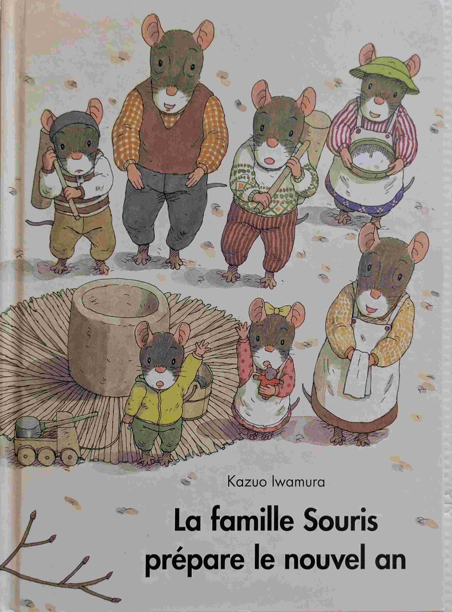
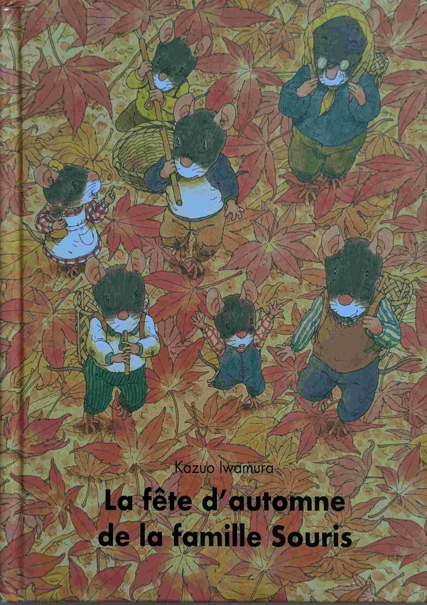
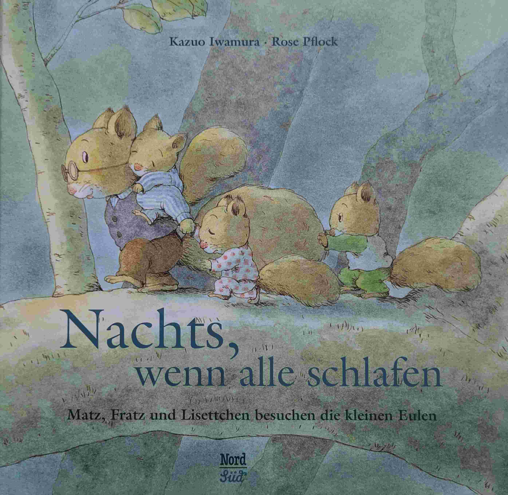

Kazuo Iwamura
Introduction
Kazuo Iwamura est un auteur et illustrateur japonais, reconnu pour ses livres pour enfants qui mettent en avant la nature et les relations humaines.
C'est déjà le Printemps! (Kazuo Iwamura)

Que devient la neige au Printemps? Une très belle histoire, beaucoup de poésie, et une très belle rencontre au milieu du lac.
L'hiver de la famille souris (Kazuo Iwamura)

La famille sourise est décidément très bricoleuse. Les souris fabriquent elle-même leur luge.
La famille Souris et le potiron (Kazuo Iwamura)

Une superbe histoire pour donner une introduction à la botanique.
La famille souris dîne au clair de lune (Kazuo Iwamura)

Un livre sur les liens familiaux et la nature.
La famille souris et la racine geante (Kazuo Iwamura)

Une histoire sur la nature.
La famille souris prépare le nouvel an (Kazuo Iwamura)

Le nouvel an au Japon, ça se mérite (du moins d'après cette histoire).
La fête d'automne de la famille souris (Kazuo Iwamura)

Sur cet album Kazuo Iwamura lache la bride! Très beau comme toujours avec lui.
La lessive de la famille souris (Kazuo Iwamura)

La magie de Kazuo Iwamura qui transforme une histoire banale (la lessive) en un moment poétique.
Le petit déjeuner de la famille Souris (Kazuo Iwamura)

Tout est dans le titre. Très belle histoire.
Le piano des bois (Kazuo Iwamura)

Une belle histoire sur la musique et la nature.
Le pique-nique de la famille Souris (Kazuo Iwamura)

Tour est dans le titre.
Le train des souris (Kazuo Iwamura)

Pour motiver les souris pour la rentrée des classes, la maman souris a une idée: suggérer des rails jusqu'à l'école. Mais le chemin est semé d'embûches.
Quand dormez-vous? (Kazuo Iwamura)

Nic, Nac et Noc les écureuils vont la découverte du décalage horaire avec les hiboux. Très mignon comme d'habitude avec Kazuo Iwamura.
Tout est rouge (Kazuo Iwamura)

Nic, Nac et Noc nous font découvrir les couleurs de l'Automne. Simple et très beau.
Un orage d'été (Kazuo Iwamura)

Les enfants sont toujours impressionés, on pourrait dire fascinés, par les orages d'été. On peut compter sur Kazuo Iwamura pour traîter le sujet avec une histoire limpide et de très belles illustrations.
Vive la neige (Kazuo Iwamura)

Un peu de neige, c'est l'occasion idéale pour sortir la luge et permettre aux adultes de retrouver une âme d'enfants.
À table (Kazuo Iwamura)

Les oiseaux ne mangent pas la même chose que les écureuils.